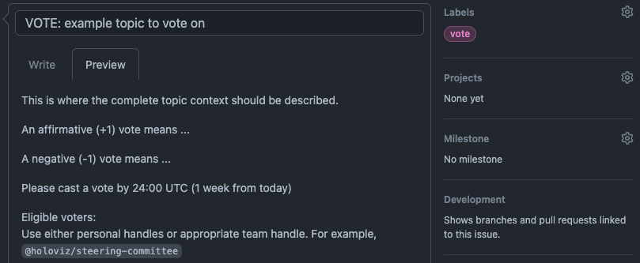

Governance Policy#
The “Project” is herein defined as the activities related to this specific GitHub repository HoloViz, within the HoloViz GitHub Organization. The purpose of this repository is primarily to host the development activities of the HoloViz.org website. This repository also hosts the HoloViz Organization governance documents, that apply to the wider HoloViz ecosystem.
This document provides the governance policy for the Project. Members agree to this policy and to abide by all Project policies, including the code of conduct, trademark policy, and antitrust policy by adding their name to the MEMBERS.md file.
1. Project Member Roles#
This project may include the following roles. Additional roles may be adopted and documented by the Project. All member role terms may be indefinite, as long as the members adhere to the Organization’s policies.
1.1 Contributors. Contributors are those that have made contributions to the Project. Contributors can participate in the project by submitting, reviewing, and discussing GitHub Pull Requests and Issues. Contributors may also participate in public discussions and presentations relating to the Project, either online or during in-person events. Contributors may not vote along with Maintainers but they can submit their input on a given topic to be considered during a consensus-seeking process. Anyone can be a Contributor - they can be affiliated with a legal entity or none. Contributors typically do not have merge permissions for the Project, but may be granted such permissions by a Project Maintainer. However, as a Contributor, this ability to merge carries no expectation to review contributions.
1.2 Maintainer. Maintainers are responsible for organizing activities around developing, maintaining, and updating the Project. Specifically, this includes making decisions about software and other technical aspects in code, services, documentation, or other materials that solely relate to this Project. Maintainers are also responsible for determining consensus. Maintainers are contributors that have an ongoing relationship to a project, and typically have GitHub merge permissions. Maintainers are involved in different aspects of the Project, such as the code or the documentation. When submitting substantial pull-requests, Maintainers should seek code review by another Maintainer. Maintainers are expected to review and merge (or reject) pull-requests and seek other Maintainers’ consensus when appropriate. This Project may add or remove Maintainers with the approval (or simple majority vote if consensus is not reached) of the current Maintainers. If a Maintainer is unresponsive at their listed handle for more than three months, the Maintainers may vote to remove the member following applicable policy and regardless of any further titles held (such as Lead Maintainer or Project Director).
1.3 Lead Maintainer. The Lead Maintainer is a Maintainer who is responsible for the day-to-day technical management of the Project, in addition to the responsibilities of a Maintainer. The Lead Maintainer is expected to make new releases unless the task has not been further delegated. The Lead Maintainer must maintain a high level of involvement in all other activities of the Project, such as advocacy, planning, support, review, and development. The Maintainers may elect or remove a Lead Maintainer through consensus or a simple majority vote if consensus is not met.
1.4 Project Director. The Project Director is a Maintainer who is responsible for setting the overall direction and scope of the Project, in addition to the responsibilities of a Maintainer. The Project Director must maintain a high level of involvement in all other activities of the Project, such as advocacy, planning, support, review, and development. The Project Director will assume or delegate the duties of a vacant Lead Maintainer position. The Project Director should defer to the consensus-seeking process and vote results of the Maintainers. In exceptional cases, the Project Director may veto a vote result, with a written explanation. The Maintainers may appeal and hold a vote to override the veto, which is carried by a 3/4 vote. This right to an appeal process for the Maintainers does not apply to votes relating to the admission of new Maintainers, for which a veto by the Project Director will be final. Maintainers may elect or remove a Project Director by a 4/5 vote.
2. Decisions#
2.1. Consensus-Based Decision Making. Projects make decisions through the consensus of the Maintainers. While the explicit agreement of all Maintainers is preferred, it is not required for consensus. Rather, the Maintainers will determine consensus based on their good faith consideration of a number of factors, including the dominant view of the Maintainers and nature of support and objections. In general, consensus is defined by the absence of strong objections. If consensus cannot be reached, the Maintainers will make the decision by vote.
2.2. Voting. Any Maintainer may call a vote with reasonable notice to other Maintainers, setting out a reasonable deadline by which to cast a vote (at least 3 working days). Any discussion may be conducted in person or electronically by text, voice, or video. The vote must take place in such a way that all Maintainers are notified that there is a vote and understand how to cast a vote. Individual vote counts should be recorded in a consistent and publicly accessible format that includes the date, proposer, and description. In any vote, each voting representative will have one vote. Except as specifically noted elsewhere in this charter, decisions by vote require a simple majority vote of all reachable and vote-participating members.
For example, a Maintainer decides to call for a vote on a technical issue that did not previously reach consensus. This Maintainer files an issue on the Project repository that clearly details the context, states precisely what an affirmative (“+1”) or negative (“-1”) vote means in regards to the issue being voted on, tags other Maintainers of the Project by their handle (@…), starts the issue title with “VOTE:”, and adds the “vote” tag. This proposing Maintainer also specifies a date by which a votes will be tallied - 1 week beyond the posting date. In this example, 7 Maintainers vote by the deadline, of which 5 vote affirmative, and therefore the issue is considered carried and the issue is closed.
Here is an example for using a GitHub issue for voting:

2.3. Appeal Process. Decisions may be appealed by opening an issue and that appeal will be considered by the Maintainers in good faith, who will respond in writing within a reasonable time. If the Maintainers deny the appeal, the appeal may be brought before the Organization Steering Committee, who will determine if the issue falls within their jurisdiction and respond in writing in a reasonable time.
2.4 Quorum. Unless otherwise stated, a quorum for a vote can be met with the participation of at least 50% of Maintainers, and at minimum, 2 participants. For example, in a vote requiring a simple majority, with 10 active Maintainers, at least 5 must vote; if 5 vote, there must be 3 affirmative votes. If there are 3 active members, at least 2 must vote; if 2 vote there must be 2 affirmative votes.
3. How We Work#
3.1. Openness. Participation is open to anyone who is directly and materially affected by the activity in question. There shall be no undue financial barriers to participation.
3.2. Balance. The development process should balance the interests of Maintainers, Contributors, and other stakeholders. Maintainers and Contributors from diverse interest categories shall be sought with the objective of achieving balance.
3.3. Coordination and Harmonization. Good faith efforts shall be made to resolve potential conflicts or incompatibility between releases in this Project.
3.4. Consideration of Views and Objections. Prompt consideration shall be given to the written views and objections of all Maintainers and Contributors.
3.5. Written procedures. This governance document and other materials documenting this project’s development process shall be available to any interested person.
4. No Confidentiality#
Information disclosed in connection with any Project activity, including but not limited to meetings, contributions, and submissions, is not confidential, regardless of any markings or statements to the contrary.
5. Trademarks#
Any names, trademarks, logos, or goodwill developed by and associated with the Project (the “Marks”) are controlled by the Organization. Maintainers may only use these Marks in accordance with the Organization’s trademark policy. If a Maintainer resigns or is removed, any rights the Maintainer may have in the Marks revert to the Organization.
6. Amendments#
Amendments to this governance policy may be made by an affirmative vote of 2/3 of all Maintainers, with approval by the Organization’s Steering Committee.
This document is based on GitHub MVG-0.1-beta, which is Licensed under the CC-BY 4.0 License.